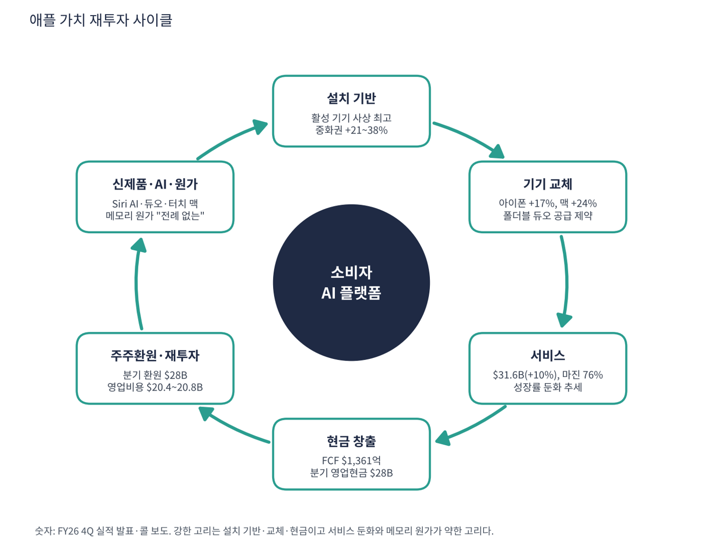

애플은 아이폰·맥·아이패드·웨어러블을 만들고 그 위에서 앱스토어·아이클라우드·애플뮤직·애플페이 같은 서비스를 파는 회사다. 하드웨어 매출의 절반 이상이 아이폰이고 이익의 40% 이상이 서비스에서 나온다. 이번 분석 대상 중 유일하게 AI 붐에서 '칩을 파는 쪽'이 아니라 '메모리 비용을 내는 쪽'이고, AI 반도체가 무너진 11월 첫 주에 혼자 52주 신고가를 냈다.
| 항목 | 내용 |
|---|---|
| 종목 | Apple Inc. (AAPL) · NASDAQ · 소비자 전자·서비스 · 1976년 설립 · 본사 캘리포니아주 쿠퍼티노 |
| 시가총액 | 약 $4.98조 · TTM PER 38.1배 · P/S 10.4배 (11/6 종가 $342.37). 빅테크 중 PER이 가장 높은 축 |
| 최근 분기(FY26Q4) | 매출 $114.5B(+12%), 영업이익 $35.6B, 순이익 $30.7B, EPS $2.10(+14%, 관세 환급 효과 $0.05 포함) |
| 연간(FY26) | 매출 $478.8B(+15%), 순이익 $132.2B, EPS $8.98(+20%) |
| 다음 분기 가이던스 | FY27Q1 매출 +7~10%(약 $154~158B, 사상 최대 분기), 서비스 +8~9%, 매출총이익률 45~46%, 영업비용 $20.4~20.8B |
| 주주환원 | FY26Q4 약 $28B(영업현금흐름 $28B와 같은 규모), 분기 배당 $0.27 |
| 다음 실적 | FY27Q1 실적: 2027년 1월 말 발표 예정 (회계연도는 9월 말 종료) |
| 직책 | 인물 | 역할·특징 |
|---|---|---|
| CEO | 존 테르누스 | 2026년 9월 취임. 하드웨어 엔지니어링 출신. 첫 실적에서 "가장 야심 찬 라인업"을 강조 |
| CFO | 케반 파렉 | 분기 콜에서 메모리 비용과 매출총이익률 전망을 설명하는 창구 |
| COO | 사비 칸 | 공급 제약(아이폰 듀오·맥·아이패드)을 설명하는 창구 |
경영 스타일: '완벽한 통합 경험에 값을 매기고, 원가 충격은 가격과 서비스 마진으로 흡수한다'. 테르누스 CEO는 메모리 가격을 "전례 없다"고 하면서 12월 분기 이후에도 더 오른다고 봤다. 그럼에도 아이폰 18 프로 출시와 함께 아이폰 17 가격을 $100 올리고 일부 맥북 가격도 인상해 원가 일부를 전가했다. 새 CEO 체제의 첫 메시지는 폼팩터 혁신이다. 첫 폴더블 아이폰 듀오("오리지널 아이폰 이후 가장 혁신적"), 처음으로 터치를 넣은 맥, 새 홈 하드웨어, 완전히 새로운 Siri AI다.
자체 칩과 OS로 기기를 만들고 그 위에 서비스를 얹는다. Siri AI는 개인정보 보호형 클라우드(Private Cloud Compute)에서 일부 연산을 하며, 엔비디아는 자사 GPU가 애플 PCC의 기밀 추론에 쓰인다고 밝혔다.
AI를 별도 앱이 아니라 기기 경험에 녹여 소비자가 새 기기를 사게 만드는 것이 목표다. FY26Q4 CFO는 활성 기기 수가 모든 주요 제품군·지역에서 사상 최고라고 밝혔다.
| 분기 (종료월) | 매출 | YoY | 매출총이익률 | 영업이익 | 순이익 | EPS | 아이폰 | 서비스 |
|---|---|---|---|---|---|---|---|---|
| FY25Q1 (24.12) | $124.3B | +4% | 46.9% | $42.8B | $36.3B | $2.40 | $69.1B | $26.3B |
| FY25Q2 (25.3) | $95.4B | +5% | 47.1% | $29.6B | $24.8B | $1.65 | $46.8B | $26.6B |
| FY25Q3 (25.6) | $94.0B | +10% | 46.5% | $28.2B | $23.4B | $1.57 | $44.6B | $27.4B |
| FY25Q4 (25.9) | $102.5B | +8% | 47.2% | $32.4B | $27.5B | $1.85 | $49.0B | $28.8B |
| FY26Q1 (25.12) | $143.8B | +16% | 48.2% | $50.9B | $42.1B | $2.84 | $85.3B | $30.0B |
| FY26Q2 (26.3) | $111.2B | +17% | 49.3% | $35.9B | $29.6B | $2.01 | $57.0B | $31.0B |
| FY26Q3 (26.6) | $109.4B | +16% | 50.1% | $35.7B | $29.8B | $2.02 | $54.3B | $30.7B |
| FY26Q4 (26.9) | $114.5B | +12% | 47.9% | $35.6B | $30.7B | $2.10 | $57.6B | $31.6B |

흐름 요약: FY26은 아이폰의 해였다. FY25 아이폰 성장률은 -1~+14%에 머물렀지만 FY26에는 4개 분기 모두 +17% 이상이었다. 같은 기간 서비스 성장률은 +10~16%로 꾸준했다. 맥도 FY26Q3·Q4에 +29%·+24% 늘었다. 매출총이익률 50.1%에는 착시가 섞여 있다. FY26Q3에는 약 2%p, Q4에는 약 1%p의 관세 환급 효과가 들어 있다. CFO는 이를 빼면 Q4 매출총이익률이 Q3보다 약 1%p 낮아졌고 "원인은 전부 메모리"라고 설명했다(콜, 보도). 제품 매출총이익률은 37.2%로 Q3(40.1%)보다 2.9%p 떨어졌다. 애플은 분기 현금흐름표를 발표문에 따로 싣지 않아 분기 영업현금흐름은 CFO 발언($28B)을 인용했다.
| 매출원 | 돈을 버는 방식 | FY26Q4 | 성장 |
|---|---|---|---|
| 아이폰 | 아이폰 18 프로·프로 맥스(9월 출시), 아이폰 17, 폴더블 아이폰 듀오(10/23 출시, $1,999부터 — Q4 매출에는 미포함) | $57.6B | +17% |
| 서비스 | 앱스토어 수수료, 아이클라우드·애플뮤직·TV+ 구독, 애플케어, 애플페이, 검색 제휴(구글) 수익. 매출총이익률 76% | $31.6B | +10% |
| 맥 | 맥북·아이맥·맥 스튜디오. 처음으로 터치스크린 맥 출시 | $10.8B | +24% |
| 웨어러블·홈·액세서리 | 애플워치·에어팟·비전 프로·새 홈 하드웨어 | $8.3B | -8% |
| 아이패드 | 아이패드 전 라인업 | $6.2B | -10% |

두 개의 엔진이 다른 마진으로 돈을 번다. FY26Q4 제품 매출 $82.9B의 매출총이익률은 37.2%, 서비스 $31.6B는 76.0%다. 서비스는 매출의 28%지만 매출총이익의 약 44%를 낸다. 메모리 가격이 오르면 제품 마진만 깎이고 서비스 마진은 영향이 거의 없다. 중화권이 돌아왔다. FY26에 $25.5B(+38%), $20.5B(+28%), $18.8B(+22%), $17.5B(+21%)로 분기마다 크게 늘었고 인도는 사상 최대 매출을 냈다. 일본은 Q4에 유일하게 줄어든 지역이다(콜, 보도).
애플의 전략은 수십 년째 같다. 하드웨어·소프트웨어·서비스를 직접 통합해 가장 좋은 사용자 경험을 만들고, 그 경험에 묶인 수십억 명에게 계속 돈을 받는 것이다. 지금 애플이 가려는 곳은 AI를 기기 경험에 녹여 교체 수요를 만드는 '소비자 AI 플랫폼'이다.
| 축 | 최근 움직임 |
|---|---|
| 새 리더십 | 2026년 9월 하드웨어 엔지니어링 출신 존 테르누스가 CEO로 취임 |
| 폼팩터 혁신 | 아이폰 듀오(폴더블), 처음으로 터치를 넣은 맥, 새 홈 하드웨어 세대 |
| AI | '완전히 새로운 Siri AI', 개인정보 보호형 클라우드에서 일부 연산 |
| 가격 결정력 | 아이폰 17 $100 인상, 일부 맥북 가격 인상으로 메모리 비용 일부 전가 |


위: 트레이딩뷰 주봉 데이터로 재구성(10·20·40주선). 아래: 트레이딩뷰 공개 차트 일봉 캡처(작도 숨김, 이동평균선·볼린저밴드만 표시).
| 이동평균 | 값 | 종가 대비 | 해석 |
|---|---|---|---|
| 5일선 | $341.25 | +0.3% | 11/5 신고가 후 되돌림 |
| 20일선 | $343.38 | -0.3% | 주가가 20일선에 걸쳐 있음. 단기 방향 결정 구간 |
| 50일선 | $336.01 | +1.9% | 9월 이후 지지선. 11/4 장중 이탈 후 회복 |
| 100일선 | $323.77 | +5.7% | 8월 박스 상단과 겹침 |
| 200일선 | $298.81 | +14.6% | 꾸준히 우상향 |
배열은 주가 ≈ 20일 > 50일 > 100일 > 200일의 정배열이다. 1~3월 $243~281 박스에서 4월 이후 추세 상승으로 전환했고, 7월 말 실적 전후 조정($300)을 거쳐 9월부터 신고가 행진을 했다. 11월 첫 주는 주봉 고가 $355, 저가 $325로 변동폭이 컸다. 실적 발표(11/2) 직후 메모리 비용 우려로 밀렸다가 11/5 신고가를 찍고 다시 내려왔다.
| 규칙 | 기준 | 현재 값 | 신호 |
|---|---|---|---|
| 장기 추세 필터 | 종가 vs 200일선 | $342.37 > $298.81 | 매수 |
| 중장기 교차 | 50일선 vs 200일선 | $336.01 > $298.81 | 매수 |
| 단기 교차 | 20일선 vs 50일선 | $343.38 > $336.01 | 매수 |
| 돈키언 채널 | 55일 고가 $355.38 / 저가 $307.01 | 중간값 $331.19 위 | 매수 |
| 1개월 모멘텀 | 21거래일 수익률 | +0.6% (기준 $340.42) | 매수 |
| 3개월 모멘텀 | 63거래일 수익률 | +11.1% (기준 $308.26) | 매수 |
| 6개월 모멘텀 | 126거래일 수익률 | +16.7% (기준 $293.32) | 매수 |
| 12개월 모멘텀 | 252거래일 수익률 | +26.7% (기준 $270.14) | 매수 |
| 종합 (8개 평균) | +1.00 | 강한 매수 |
해석: 8개 신호가 모두 매수(+1.00)다. 반도체에서 뺀 돈이 옮겨갈 수 있는 '대형 기술주 중 안전한 추세'가 애플과 마이크로소프트뿐이다. 다만 1개월 모멘텀이 기준가 대비 +0.6%에 불과해 $340 아래로 내려가면 바로 매도로 바뀐다. 14일 ATR $9.02 (2.6%)로 반도체 종목들의 3분의 1 수준이다.
| 가격 | 무엇이 바뀌나 | 의미 |
|---|---|---|
| $355 종가 돌파 | 신고가 영역 재진입 | 추세 가속, 저항 없음 |
| $340 ~ 343 | 1개월 기준가 + 20일선 | 종가 이탈 시 1M 매도 전환 (+1.00 → +0.75) |
| $336 | 50일선 | 이탈 시 20/50 교차 위험, 단기 추세 훼손 |
| $308 | 3개월 기준가·55일 저점($307) | 중기 추세 이탈선 |
| 구분 | 가격대 | 근거 |
|---|---|---|
| 저항 | $355 | 11/5 사상 최고가 |
| 지지 1 | $336 ~ 343 | 20·50일선 |
| 지지 2 | $324 ~ 331 | 100일선, 11/4 장중 저점 $325 |
| 지지 3 | $299 ~ 307 | 200일선, 55일 저점 |
펀더멘털(사상 최대 연말 분기 가이던스)과 추세(CTA 만점)가 같은 방향이다. 걱정은 밸류에이션(PER 38배, PEG 1.83)과 메모리 비용에 따른 이익률 하락이다. 신고가 바로 아래에서 추격하기보다 $336(50일선) 부근에서 30%, $324~331(100일선) 부근에서 20%를 눌림 매수하고 $355 종가 돌파 시 나머지 50%를 추가한다(평균 약 $331, 손절 $316 기준 손익비 1:1.6~1:2.9). $355에서 40%, $375에서 40% 익절하고 나머지 20%는 추세 추종한다. $336 종가 이탈이면 20/50일 교차 위험으로 비중을 줄이고, $316 종가 이탈이면 손절하며 200일선($299)까지 열려 있다. 트리거는 메모리 가격 추가 급등 보도, 아이폰 듀오 생산 차질, 반독점·앱스토어 규제다.
| 악재 요인 | 내용 | 강도 |
|---|---|---|
| 메모리 원가 | "전례 없는" 가격 상승이 FY27 내내 이어질 가능성. 제품 마진 37% → 추가 하락. 연말 분기 매출총이익률 45~46% | 높음 |
| 밸류에이션 | PER 38.1배, PEG 1.83. 이익률이 내려가는 국면에서 높은 배수 유지 부담 | 중간~높음 |
| 공급 제약 | 듀오·맥·아이패드 공급 부족으로 매출 이연 | 중간 |
| 규제 | 앱스토어 수수료, 검색 기본값 계약에 대한 각국 규제. 서비스 성장률 +16% → +10% 둔화 | 중간 |
| AI 경쟁 | 새 Siri AI의 완성도, 안드로이드 진영의 AI 기기 경쟁 | 참고 |
| 티커 | 회사 | 시가총액 | PER(TTM) | PEG | P/S | EPS 성장(YoY) |
|---|---|---|---|---|---|---|
| AAPL | 애플 | $4,975B | 38.2배 | 1.84 | 10.21배 | +20% |
| MSFT | 마이크로소프트 | $3,940B | 27.7배 | 0.74 | 11.09배 | +36% |
| GOOGL | 알파벳 | $3,476B | 14.9배 | 0.17 | 7.39배 | +89% |
| AMZN | 아마존 | $2,804B | 21.0배 | 0.27 | 3.45배 | +75% |
| META | 메타 | $1,560B | 20.8배 | 0.67 | 6.18배 | +30% |
| NVDA | 엔비디아 | $4,498B | 23.6배 | 0.20 | 15.63배 | +125% |
| TSLA | 테슬라 | $1,416B | 394.0배 | – | 11.61배 | -39% |
EPS 성장률은 트레이딩뷰 TTM 값이다.
비교 결론: 애플 PER 38.1배는 테슬라(394)를 제외하면 빅테크 중 가장 높고 마이크로소프트(27.7)·메타(20.8)·아마존(21.0)·알파벳(14.9)·엔비디아(23.6)보다 높다. EPS 성장률 +20%는 이들보다 낮아 PEG 1.83은 동종 중 가장 높은 축이다. 빅테크 중 가장 비싸면서 성장은 가장 낮은 종목이다. 그 프리미엄의 근거는 성장이 아니라 현금흐름의 안정성과 서비스 마진이다.
애플은 적자 기업이 아니다. TTM 순이익 $1,322억, EBITDA $1,715억, FCF $1,361억이라 '런웨이'(남은 현금으로 몇 년 버티나)는 의미가 없다. 대신 메모리 원가가 매출총이익률을 깎을 때 이익이 얼마나 빠지는지와 현금이 주주환원으로 어떻게 쓰이는지를 점검했다.
| 지표 | 값 | 계산·출처 | 해석 |
|---|---|---|---|
| 영업현금흐름 (FY26Q4) | $28B | CFO 발언 (보도) | 주주환원 $28B와 같은 규모 |
| 잉여현금흐름 (TTM) | +$1,361억 | 트레이딩뷰, 11/9 기준 | FCF 수익률 약 2.7% (시총 $4.98조 기준) |
| 현금·단기투자 / 총부채 | $567억 / $858억 | 트레이딩뷰 최근 분기 | 단기 기준 순부채 약 $291억. 장기 유가증권은 별도라 단순 비교 주의 |
| EBITDA (TTM) | $1,715억 | 트레이딩뷰 | 영업이익률 33.0% |
| 주주환원 | 분기 약 $28B + 배당 $0.27 | FY26Q4 | 배당수익률 0.3%, 환원 대부분은 자사주 매입 |
| 가정 | 연 이익 영향 | EPS 영향 | 의미 |
|---|---|---|---|
| FY27Q1 가이던스(매출총이익률 45~46%) 유지, 직전 분기(47.9%) 대비 -1.9%p × 매출 $156B | -$29.6억 (분기, 세전) | 분기 약 -$0.17 | 가이던스에 이미 반영된 하락분 |
| FY27 내내 추가 -2%p (매출 $520B 가정) | -$104억 (세전) | 약 -$0.59 (-6.6%) — 세율 16% 가정 | 메모리가 12월 이후에도 오른다는 CEO 발언대로 가는 경우 |
| 위 + 아이폰 듀오 판매 부진로 매출 -3% (가정) | 추가 -$156억 매출 × 약 45% = -$70억 | 추가 약 -$0.40 | 합산 약 -$1.0 (-11%). 그래도 EPS는 $8~9대 유지 |
매출 $520B(FY27, +9% 가정), 세율 16%, 주식 수 약 14.7억 주(순이익 $1,322억 ÷ EPS $8.98로 역산), 추가 매출총이익률 -2%p와 매출 -3%는 모두 내가 둔 스트레스 가정이다.
| 기준 | 매출 | P/S | 비고 |
|---|---|---|---|
| 트레이딩뷰 표시값(11/6 환산) | – | 10.2배 | 산출 기준 차이 |
| 최근 4분기(FY26) | $4,788억 | 10.4배 | 시총 $4.98조 ÷ $4,788억 |
| FY27 매출 +9% 가정 | $5,219억 | 9.5배 | FY27Q1 가이던스 +7~10% 기준 (가정) |
| 동종 빅테크 | – | – | 마이크로소프트 11.1, 알파벳 7.4, 메타 6.2, 아마존 3.4, 엔비디아 14.8 |
해석: 애플 P/S 10.4배는 마이크로소프트와 비슷하고 알파벳·메타·아마존보다 높다. 매출 성장률(+15%)이 이들보다 낮은데도 같은 수준의 배수를 받는 것은 이익률(영업이익률 33%)과 현금흐름의 안정성, 서비스 마진(76%)에 대한 프리미엄이다.
| 지표 | 값 | 판정 |
|---|---|---|
| EBITDA (트레이딩뷰, TTM) | $1,715억 | 흑자 |
| EBITDA 마진 | 35.8% | $1,715억 ÷ $4,788억 |
| TTM 영업이익률 | 33.0% | FY26Q4 단독 31.1%($35.6B ÷ $114.5B) |
| 순부채 / EBITDA | 0.17배 | 단기 기준 순부채 $291억 (장기 유가증권 제외) |
| EV/EBITDA | 약 29.2배 | (시총 $4.98조 + 순부채 $291억) ÷ $1,715억 |
EBITDA 마진 36%는 하드웨어 회사 중 최상위권이다. 영업이익률은 Q4에 31.1%로 직전 분기(32.6%)보다 내려왔는데 메모리 비용 탓이다.
| 방식 | PER | EPS 성장률 | PEG | 판정 |
|---|---|---|---|---|
| 트레이딩뷰 (TTM, 11/6 환산) | 38.1배 | +20.3% | 1.83 | 기준 초과 |
| 직접 계산 (FY26 EPS $8.98 vs FY25 $7.47) | 38.1배 | +20.2% | 1.89 | 기준 초과 |
| 관세 환급 제외 (내 추정, EPS 약 $8.81) | 38.9배 | 약 +18% | 약 2.2 | 기준 초과 |
| 선행 (FY27 EPS +10% 가정) | 38.1배 | +10% | 3.8 | 기준 초과 |
| PEG 1.0을 만족하려면 필요한 EPS 성장률 | 38.1배 | 연 +38% 이상 | 1.0 | FY26 +20%의 약 2배 |
판정: PEG 1.83 → '투자 적격' 기준(1.0 이하) 초과. 이번 대상 중 가장 높은 PEG다. 관세 환급 효과를 빼면 약 2.2로 더 높고, FY27 성장이 10%로 둔화되면 3.8까지 올라간다. 1.0을 만족하려면 EPS가 매년 38% 이상 늘어야 하는데 FY26의 +20%도 아이폰 교체 주기 효과가 큰 해였다. 애플은 PEG가 아니라 현금흐름 안정성·서비스 마진·가격 결정력으로 프리미엄을 받는 종목이라 PEG 기준으로는 매수 후보가 아니다. 관세 환급 제외 EPS는 Q3 효과를 '매출총이익률 약 2%p'에서 역산한 내 추정이다.

애플 사이클의 엔진은 수십억 대의 활성 기기라는 설치 기반이다. 설치 기반이 교체 수요와 서비스 구독을 만들고, 그 현금이 주주환원과 신제품·AI 개발로 돌아가며, 신제품이 다시 교체 수요를 만든다. 설비투자가 작아 번 돈의 대부분이 환원된다는 점이 하이퍼스케일러형과 다르다.
| 고리 | 현재 숫자 | 고리 강도 | 약해지는 신호 |
|---|---|---|---|
| ① 설치 기반 | 활성 기기 사상 최고(모든 주요 제품군·지역), 중화권 +21~38% | 강함 | 중화권·일본 등 지역 성장 둔화 |
| ② 기기 교체 | 아이폰 +17%(4개 분기 연속 +17% 이상), 맥 +24%, 듀오 공급 제약 | 강함 | 듀오 판매 부진, 아이폰 성장률 한 자릿수 |
| ③ 서비스 | $31.6B(+10%), 성장률 +16% → +12% → +10%, 가이던스 +8~9% | 둔화 | 규제·검색 제휴 수익 감소 |
| ④ 현금 창출 | FCF $1,361억, 분기 영업현금 $28B | 강함 | 매출총이익률 45% 아래로 하락 |
| ⑤ 환원·재투자 | 분기 환원 $28B(영업현금과 동일), 영업비용 $20.4~20.8B | 여유 | 환원이 FCF를 초과 |
| ⑥ 신제품·AI·원가 | Siri AI·듀오·터치 맥, 메모리 "전례 없는" 상승, 매출총이익률 45~46% | 비용 압박 | 메모리 추가 급등, Siri AI 클라우드 비용 증가 |
이 사이클의 구조: 엔비디아·마이크론처럼 AI에서 돈을 버는 구조가 아니라 AI 비용(메모리·클라우드)을 받아 기기 가격과 서비스로 흡수하는 사이클이다. 강한 고리는 ①·②·④이고 약한 고리는 ③(서비스 둔화)과 ⑥(원가)이다. 다음 분기에 볼 것은 매출총이익률 45~46% 달성과 듀오 판매량이다.